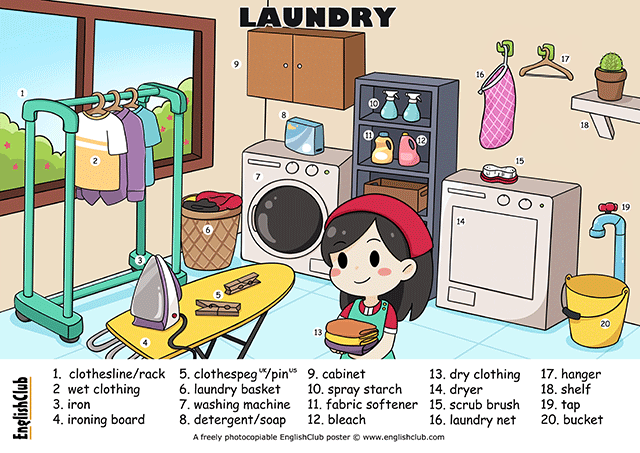

| by ringing | began climbing |
|---|---|
| 介词后面100%要使用doing,不能使用do、to do代替 | 动词后可以接：doing、to do、do等(根据具体的动词决定) |
| I was almost there | when a sarcastic voice below said, | 'I don't think | the windows need cleaning at this time of the night.' |
| 时间状语主句 | 时间状语从句 | 宾语从句（I think the windows don' t need cleaning at this time of the night.） | |
| 否定前移：否定词 "don't"（不）被移到主语 "the windows"（窗户）之前，从而颠倒了句子的词序。这种结构强调了说话者的否定观点，即他们认为这个时间不需要清洁窗户。这是一个常见的应用，以强调说话者的态度或观点。 | |||
| regret doing sth. 后悔做了…（对已发生的事情表示后悔） | regret to do sth. 遗憾…（对现在要发生的事表示抱歉） |
|---|---|
| I regretted saying it almost at once. | We regret to inform you that you needn’t come here next week. |
| remember/forget + to do sth. 指末来的动作 | remember/forget doing sth. 指过去的动作（已发生过） |
|
|
| stop to do sth. 指目的 | stop doing sth. 停下正在做的动作 |
| On the way to the station I stopped to buy a paper. | When he told us the story, we just couldn’t stop laughing. |
注：非限定性定语从句通常使用逗号与主句隔开，但并非必须。逗号的使用与语境和句子结构有关。在正式写作中，为了提高句子的清晰度和读者理解，通常建议在非限定性定语从句之前加上逗号。
注2：在《三册》第7课会学到大概可以解释这是限定性、非限定性的问题（这里根本就不是正常的定语从句）。

"So do I" 是一个简短的回应，通常用于表示你同意或与别人的陈述相符。这个短语通常用在对肯定句或否定句做出陈述时，以表示你有相同的感受、观点或意见。
| So + 助动词 + sb. | ||
|---|---|---|
| So did I. 时态可变 | So does she. 主语可以变 | Neither + 助动词 + sb. 否定 |
| I felt excited after the party. - So did I. | I can swim. - So can I. | I don' t like my job. - Neither do I. |
so 和 neither/nor 用于并列补充句和表示反应的句子时表示“也，同样”，so 用于肯定句，neither/nor 用于否定句。它们后面跟的是省略形式的分句，只有助动词+主语，也可以是情态助动词+主语：